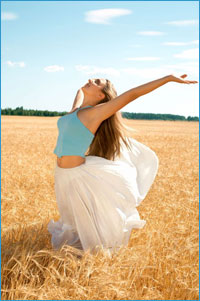
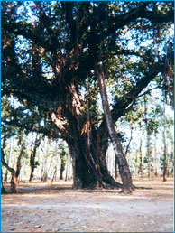

LES
GROUPES ANIMÉS PAR LORRAINE DESMARAIS
GROUPE |
DATES |
LIEU |
|
sur invitation |
Longueuil |
|
sur invitation |
Longueuil
|
LES LECTURES DU «GUIDE»

Depuis plusieurs années, des rencontres sont
organisées autour des enseignements spirituels qu’ Eva
Pierrakos a reçus en channeling et que l’émetteur
a toujours signé du nom de « Guide ». L’aspect
transformation de la guérison spirituelle a été ce
que nous avons le plus touché et exploré dans les premières
années. Cette année nous poursuivrons l’observation
minutieuse du fonctionnement de l’ego et l’exploration
de l’aspect nourrissant, guérissant et transcendant
du chemin. L’aspect nourrissant et guérissant se fera à travers
des exercices simples et l’ajout des textes inédits
de gens qui cheminent depuis plus de trente ans avec l’enseignement
laissé par Swami Prajnanpad qui va dans le même sens
que celui de « Guide ».
Les textes des lectures varient
entre 10 et 15 pages et sont publiées en anglais. Je me permettrai éventuellement
d'ajouter des textes autres que ceux du «Guide» pour
apporter un éclairage différent sur les sujets choisis.
Comme dans les années précédentes, je ferai
une traduction française audio à première vue
pour ceux qui ont de la difficulté avec la langue anglaise.
Le résultat de l'enregistrement sur cassette audio est de
qualité minimale, mais permet une compréhension sommaire
des textes. Il y a des frais supplémentaires pour ce service. 
Les rencontres sont offertes à tous ceux qui
veulent se joindre au groupe déjà existant. Elles permettent
de se retrouver avec des gens qui cheminent depuis plusieurs années
et pour qui le désir de grandir en conscience, de se responsabiliser,
de guérir, de s'aimer et de vivre éveillé est
devenu une priorité.
Les dates des rencontres pour l’année 2008
- 2009 sont les suivantes :
Les vendredis :
• 19 septembre 2008
• 28 novembre 2008
• 30 janvier 2009
• 20 mars 2009
• 22 mai 2009
Horaire : 19h à 21h40
Lieu: 3130, rue Moreau, Longueuil
Coût :
45$ par rencontre, payable le soir même.
(Textes des lectures inclus)
Cassette de la lecture : 15$ (Optionnel)
Afin que tous les participants puissent retirer le
maximum de ces soirées et afin de conserver l'homogénéité du
groupe, votre engagement impliquant votre présence à toutes
les rencontres ainsi que le paiement complet des quatre rencontres,
que vous y soyez présent ou non, est requis.
Si vous voulez participer, veuillez me téléphoner
le plus tôt possible pour me confirmer votre présence
et recevoir la première lecture qui s’intitule :
« Further aspect of polarity - selfishness »>

LE GROUPE DE TRAVAIL PAR L'APPROCHE
DU CORE ENERGETICS
Session de groupe en travail thérapeutique
plus particulièrement axé sur l'approche du CORE ENERGETICS.
Après dix ans d'amitié et de complicité dans
nos études aux États-Unis, Yolaine Saint-Germain et
moi-même avons décidé de nous unir pour offrir
des sessions de groupe en travail thérapeutique axé plus
particulièrement sur l'approche du Core Energetics. Cette
approche utilise le corps physique pour travailler les blocages profonds.
Les groupes de travail fonctionnent depuis maintenant sept ans et
s'adressent aux gens qui veulent en profiter pour approfondir leur
propre démarche de transformation et de guérison. La
majorité des participants travaillent déjà en
session individuelle avec Yolaine ou moi, ou encore, avec d'autres
thérapeutes.
Le travail de groupe, malgré son côté parfois
menaçant, nous offre une occasion unique de nous dépasser,
de découvrir certaines de nos facettes encore inconnues, de
profiter du soutien des autres et de nous enrichir à tous
les niveaux grâce au travail des autres, travail auquel nous
assistons et que nous soutenons.
Le nombre de participants(es)
se limite à douze;
nous demandons à tous et à toutes de s'engager à être
présent(e) aux six rencontres. Les participants(es) s'engagent également à défrayer
le prix des six rencontres même si ils ou elles doivent s'absenter.
Coût : 60$ par rencontre de
trois heures pour un total de 420$.
Si vous voulez vous joindre au prochain groupe à l'automne
2008, veuillez communiquer avec Lorraine Desmarais au (450) 670-3214.
|